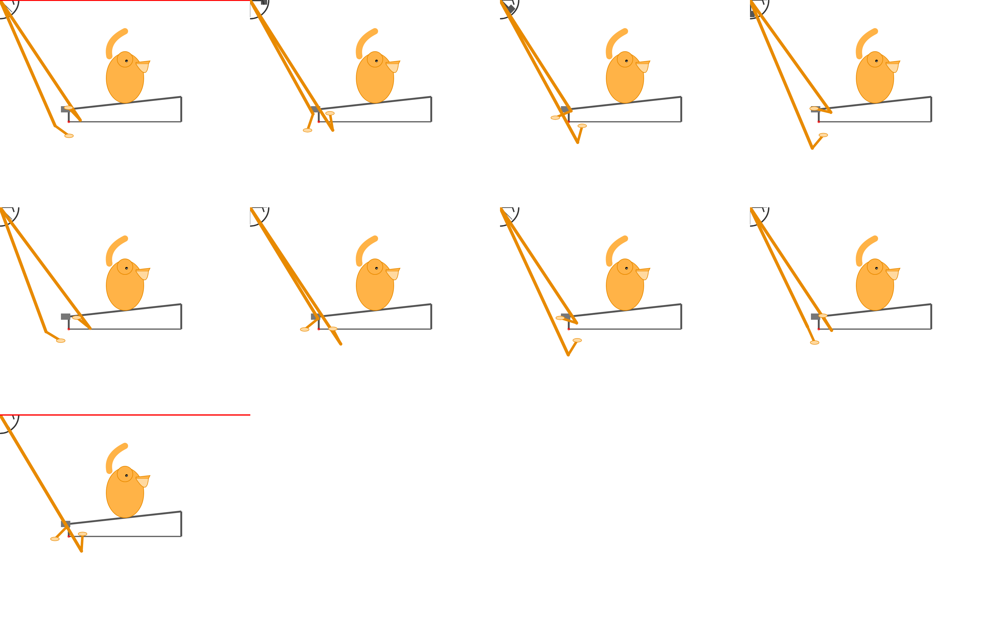
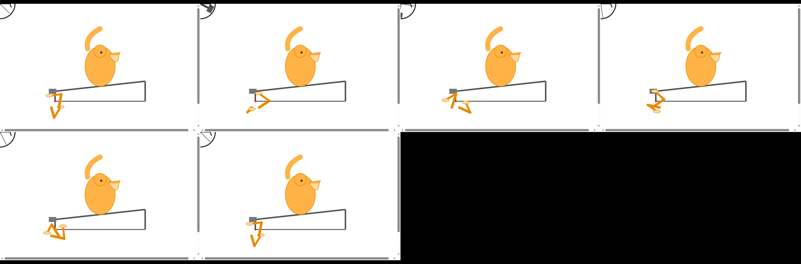
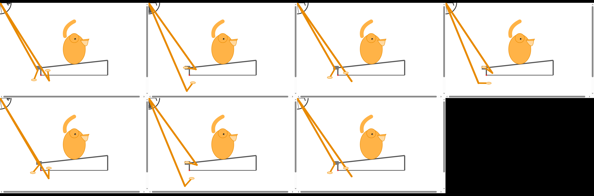

产物目录 swarm/simple-swarm-server/workspace/pelican-8/ 来源 swarm pelican-8（6 个 agent，$7.66 / 上限 $15）
| 来源 | 脚-踏板最大距离 | 结论 |
|---|---|---|
| foot_verification2.json（IK 模型自算） | 0.00 px | all_pass: true |
| verification_report.txt（自测自签） | 0.000000 px | 通过 |
| verification/verification_report.txt（独立采样） | 531.448 px | FAIL |
| verification_correct/（修正版独立复检） | 90.00 px | FAIL |
| INDEPENDENT_VERIFICATION_REPORT.md（luther 署名） | 528.578 px | FAIL（超阈值约 176 倍） |
轮子 / 踏板 / 链条：逐帧角度完全一致，前轮与后轮最大差 0°（独立复检也认）。
唯一说"通过"的两行是自己算、自己签；三份独立复检实测都是 90–531 px。这正是本轮加「复检片不许产物最后改动者签收」要治的病。



实测脚本：capture_samples.py（CDP 逐帧截图）→ verify_pelican.py / verify_legs_correct.py（量角度与距离）→ measurements.json。